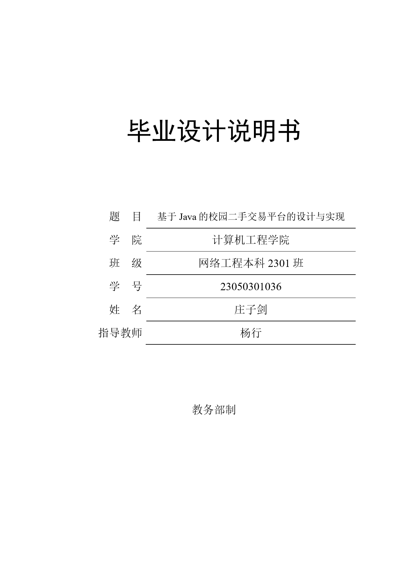
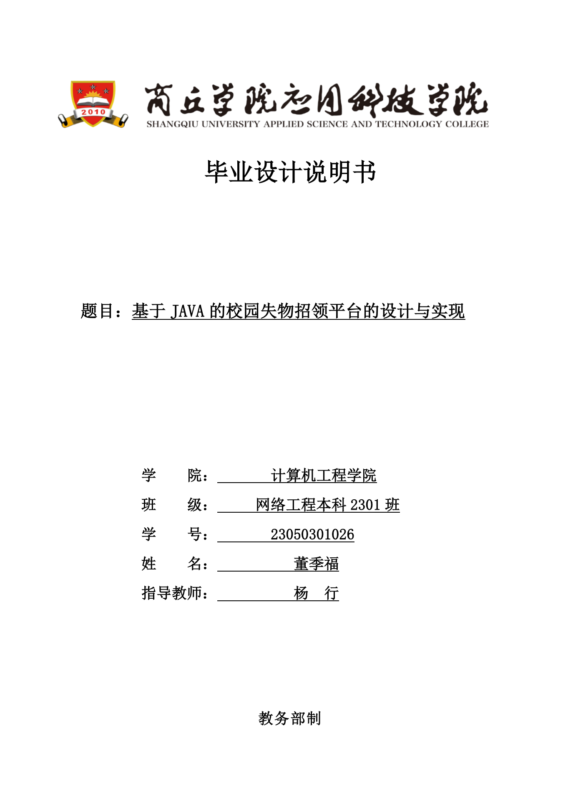
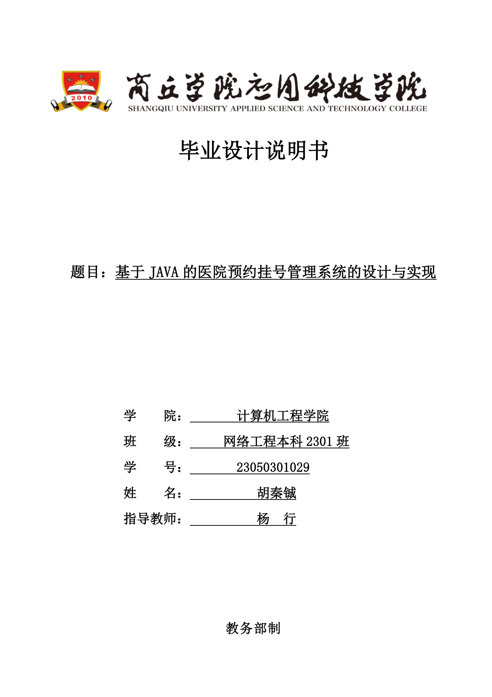
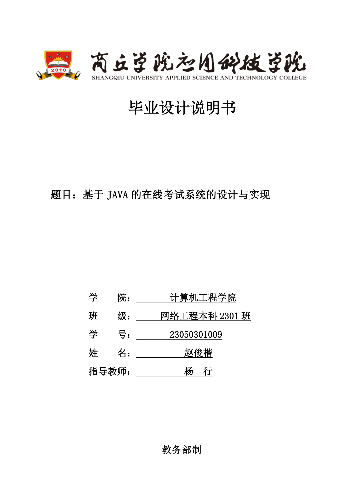

通过率 0.0%（0/6 份无 error 级问题）
| 规则 | 命中次数 |
|---|---|
| BODY-004 | 133 |
| TAB-002 | 51 |
| STRUCT-001 | 12 |
| ABS-001 | 6 |
| ABS-003 | 6 |
| TITLE-001 | 6 |
| TITLE-002 | 6 |
| TOC-001 | 6 |
| 缩略图 | 文件 | 错误 | 警告 | 提示 | 状态 | 耗时 |
|---|---|---|---|---|---|---|
 | 23050301001_张三_论文.docx | 13 | 24 | 0 | 未通过 | 1.098s |
| 23050301002_李四_论文(1).docx | 14 | 23 | 0 | 未通过 | 1.211s |
 | 23050301002_李四_论文.docx | 14 | 23 | 0 | 未通过 | 1.192s |
 | 23050301005_钱七_论文.docx | 14 | 24 | 0 | 未通过 | 1.305s |
| 23050301006_孙八_论文.docx | 14 | 25 | 0 | 未通过 | 1.215s | |
 | 论文终稿_赵六.docx | 12 | 26 | 0 | 未通过 | 1.232s |
| 文件 | 规则 | 级别 | 位置 | 说明 | 实际值 | 期望值 |
|---|---|---|---|---|---|---|
| 23050301001_张三_论文.docx | BODY-004 | 警告 | body/para/110「从Web开发的角度看，Java技术体系提供了从请…」 | 正文段落对齐方式不是 justify | left | both（两端对齐） |
| 23050301001_张三_论文.docx | BODY-004 | 警告 | body/para/113「Spring Boot提供了丰富的起步依赖，将常…」 | 正文段落对齐方式不是 justify | left | both（两端对齐） |
| 23050301001_张三_论文.docx | BODY-004 | 警告 | body/para/114「Spring Boot内置了Tomcat、Jet…」 | 正文段落对齐方式不是 justify | left | both（两端对齐） |
| 23050301001_张三_论文.docx | BODY-004 | 警告 | body/para/115「在Web层开发方面，Spring Boot通过S…」 | 正文段落对齐方式不是 justify | left | both（两端对齐） |
| 23050301001_张三_论文.docx | BODY-004 | 警告 | body/para/117「在安全控制方面，Spring Boot可以通过拦…」 | 正文段落对齐方式不是 justify | left | both（两端对齐） |
| 23050301001_张三_论文.docx | BODY-004 | 警告 | body/para/118「在接口规范方面，系统遵循RESTful设计风格，…」 | 正文段落对齐方式不是 justify | left | both（两端对齐） |
| 23050301001_张三_论文.docx | BODY-004 | 警告 | body/para/198「根据数据库逻辑结构设计，系统在MySQL中创建了…」 | 正文段落对齐方式不是 justify | left | both（两端对齐） |
| 23050301001_张三_论文.docx | BODY-004 | 警告 | body/para/226「系统后端代码位于com.campus.trade…」 | 正文段落对齐方式不是 justify | left | both（两端对齐） |
| 23050301001_张三_论文.docx | BODY-004 | 警告 | body/para/227「系统开发环境为JDK 1.8、Maven 3.9…」 | 正文段落对齐方式不是 justify | left | both（两端对齐） |
| 23050301001_张三_论文.docx | BODY-004 | 警告 | body/para/230「用户登录功能由UserController类负责…」 | 正文段落对齐方式不是 justify | left | both（两端对齐） |
| 23050301001_张三_论文.docx | BODY-004 | 警告 | body/para/231「登录方法的主要逻辑为：首先根据用户账号构造Que…」 | 正文段落对齐方式不是 justify | left | both（两端对齐） |
| 23050301001_张三_论文.docx | BODY-004 | 警告 | body/para/232「前端接收到登录成功的响应后，将令牌保存到Pini…」 | 正文段落对齐方式不是 justify | left | both（两端对齐） |
| 23050301001_张三_论文.docx | BODY-004 | 警告 | body/para/236「商品浏览与搜索功能由GoodsControlle…」 | 正文段落对齐方式不是 justify | left | both（两端对齐） |
| 23050301001_张三_论文.docx | BODY-004 | 警告 | body/para/242「商品发布功能由GoodsController的p…」 | 正文段落对齐方式不是 justify | left | both（两端对齐） |
| 23050301001_张三_论文.docx | BODY-004 | 警告 | body/para/247「商品下单功能由OrderController类实…」 | 正文段落对齐方式不是 justify | left | both（两端对齐） |
| 23050301001_张三_论文.docx | BODY-004 | 警告 | body/para/252「商品留言功能由CommentController…」 | 正文段落对齐方式不是 justify | left | both（两端对齐） |
| 23050301001_张三_论文.docx | BODY-004 | 警告 | body/para/259「管理员后台登录功能由AdminControlle…」 | 正文段落对齐方式不是 justify | left | both（两端对齐） |
| 23050301001_张三_论文.docx | BODY-004 | 警告 | body/para/264「管理员用户管理功能由AdminControlle…」 | 正文段落对齐方式不是 justify | left | both（两端对齐） |
| 23050301001_张三_论文.docx | BODY-004 | 警告 | body/para/269「管理员商品管理功能由AdminControlle…」 | 正文段落对齐方式不是 justify | left | both（两端对齐） |
| 23050301001_张三_论文.docx | BODY-004 | 警告 | body/para/274「管理员订单管理功能由AdminControlle…」 | 正文段落对齐方式不是 justify | left | both（两端对齐） |
| 23050301001_张三_论文.docx | BODY-004 | 警告 | body/para/279「管理员数据统计功能由StatsControlle…」 | 正文段落对齐方式不是 justify | left | both（两端对齐） |
| 23050301001_张三_论文.docx | BODY-004 | 警告 | body/para/284「管理员留言管理功能由AdminControlle…」 | 正文段落对齐方式不是 justify | left | both（两端对齐） |
| 23050301001_张三_论文.docx | TITLE-001 | 错误 | front/title_cn/22「基于Java的校园二手交易平台的设计与实现」 | 中文题目格式不符合规范 | 段前=0.00行 | size_pt=16，east_asia=黑体，alignment=center，line_spacing=1.5，before_lines=1，after_lines=1 |
| 23050301001_张三_论文.docx | TITLE-002 | 错误 | front/title_en/27「Design and Implementatio…」 | 英文题目格式不符合规范 | 段前=0.00行 | size_pt=16，ascii=Times New Roman，bold=是，alignment=center，line_spacing=1.5，before_lines=1，after_lines=1 |
| 23050301001_张三_论文.docx | ABS-001 | 错误 | front/abstract_label_cn/23「摘 要」 | 中文摘要标题格式不符合规范 | 段前=0.00行 | size_pt=16，east_asia=黑体，alignment=center，line_spacing=1.5，before_lines=1，after_lines=1，char_gap=2 |
| 23050301001_张三_论文.docx | ABS-003 | 错误 | front/abstract_label_en/28「Abstract」 | 英文摘要标题格式不符合规范 | 段前=0.00行 | size_pt=16，ascii=Times New Roman，alignment=center，line_spacing=1.5，before_lines=1，after_lines=1 |
| 23050301001_张三_论文.docx | TOC-001 | 错误 | front/toc_title/32「目 录」 | 目录标题格式不符合规范 | 段前=0.00行 | size_pt=16，east_asia=黑体，alignment=center，line_spacing=1.5，before_lines=1，after_lines=1 |
| 23050301001_张三_论文.docx | TAB-002 | 错误 | table/3 | 表内文字格式不符合规范 | 字号=9.5pt（1 处，如“CURRENT_TIMESTAM”） | size_pt=10.5，east_asia=宋体，alignment=center，line_spacing=1.5 |
| 23050301001_张三_论文.docx | TAB-002 | 错误 | table/4 | 表内文字格式不符合规范 | 字号=9.5pt（1 处，如“CURRENT_TIMESTAM”） | size_pt=10.5，east_asia=宋体，alignment=center，line_spacing=1.5 |
| 23050301001_张三_论文.docx | TAB-002 | 错误 | table/5 | 表内文字格式不符合规范 | 字号=9.5pt（1 处，如“CURRENT_TIMESTAM”） | size_pt=10.5，east_asia=宋体，alignment=center，line_spacing=1.5 |
| 23050301001_张三_论文.docx | TAB-002 | 错误 | table/6 | 表内文字格式不符合规范 | 字号=9.5pt（1 处，如“CURRENT_TIMESTAM”） | size_pt=10.5，east_asia=宋体，alignment=center，line_spacing=1.5 |
| 23050301001_张三_论文.docx | TAB-002 | 错误 | table/7 | 表内文字格式不符合规范 | 字号=9.5pt（1 处，如“CURRENT_TIMESTAM”） | size_pt=10.5，east_asia=宋体，alignment=center，line_spacing=1.5 |
| 23050301001_张三_论文.docx | TAB-002 | 错误 | table/8 | 表内文字格式不符合规范 | 字号=9.5pt（1 处，如“CURRENT_TIMESTAM”） | size_pt=10.5，east_asia=宋体，alignment=center，line_spacing=1.5 |
| 23050301001_张三_论文.docx | TAB-002 | 错误 | table/9 | 表内文字格式不符合规范 | 字号=9.5pt（1 处，如“CURRENT_TIMESTAM”） | size_pt=10.5，east_asia=宋体，alignment=center，line_spacing=1.5 |
| 23050301001_张三_论文.docx | TAB-002 | 错误 | table/10 | 表内文字格式不符合规范 | 字号=9.5pt（1 处，如“CURRENT_TIMESTAM”） | size_pt=10.5，east_asia=宋体，alignment=center，line_spacing=1.5 |
| 23050301001_张三_论文.docx | STRUCT-001 | 警告 | structure/order/附录 | 未找到装订顺序中的“附录”部分 | 缺失 | order=[封面，诚信承诺书，中文摘要，英文摘要，目录，正文，致谢，参考文献，附录，外文资料翻译，封底] |
| 23050301001_张三_论文.docx | STRUCT-001 | 警告 | structure/order/外文资料翻译 | 未找到装订顺序中的“外文资料翻译”部分 | 缺失 | order=[封面，诚信承诺书，中文摘要，英文摘要，目录，正文，致谢，参考文献，附录，外文资料翻译，封底] |
| 23050301002_李四_论文(1).docx | BODY-004 | 警告 | body/para/114「从Web开发的角度看，Java技术体系提供了从请…」 | 正文段落对齐方式不是 justify | left | both（两端对齐） |
| 23050301002_李四_论文(1).docx | BODY-004 | 警告 | body/para/117「Spring Boot提供了丰富的起步依赖，将常…」 | 正文段落对齐方式不是 justify | left | both（两端对齐） |
| 23050301002_李四_论文(1).docx | BODY-004 | 警告 | body/para/118「Spring Boot内置了Tomcat、Jet…」 | 正文段落对齐方式不是 justify | left | both（两端对齐） |
| 23050301002_李四_论文(1).docx | BODY-004 | 警告 | body/para/119「在Web层开发方面，Spring Boot通过S…」 | 正文段落对齐方式不是 justify | left | both（两端对齐） |
| 23050301002_李四_论文(1).docx | BODY-004 | 警告 | body/para/121「在安全控制方面，Spring Boot可以通过拦…」 | 正文段落对齐方式不是 justify | left | both（两端对齐） |
| 23050301002_李四_论文(1).docx | BODY-004 | 警告 | body/para/122「在接口规范方面，系统遵循RESTful设计风格，…」 | 正文段落对齐方式不是 justify | left | both（两端对齐） |
| 23050301002_李四_论文(1).docx | BODY-004 | 警告 | body/para/200「根据数据库逻辑结构设计，系统在MySQL中创建了…」 | 正文段落对齐方式不是 justify | left | both（两端对齐） |
| 23050301002_李四_论文(1).docx | BODY-004 | 警告 | body/para/232「系统开发环境为JDK 1.8、Maven 3.9…」 | 正文段落对齐方式不是 justify | left | both（两端对齐） |
| 23050301002_李四_论文(1).docx | BODY-004 | 警告 | body/para/235「用户登录功能由UserController类负责…」 | 正文段落对齐方式不是 justify | left | both（两端对齐） |
| 23050301002_李四_论文(1).docx | BODY-004 | 警告 | body/para/236「登录方法的主要逻辑为：首先根据学号构造Query…」 | 正文段落对齐方式不是 justify | left | both（两端对齐） |
| 23050301002_李四_论文(1).docx | BODY-004 | 警告 | body/para/237「前端接收到登录成功的响应后，将令牌保存到Pini…」 | 正文段落对齐方式不是 justify | left | both（两端对齐） |
| 23050301002_李四_论文(1).docx | BODY-004 | 警告 | body/para/241「失物信息浏览与搜索功能由ItemControll…」 | 正文段落对齐方式不是 justify | left | both（两端对齐） |
| 23050301002_李四_论文(1).docx | BODY-004 | 警告 | body/para/247「失物详情与认领申请功能由ItemControll…」 | 正文段落对齐方式不是 justify | left | both（两端对齐） |
| 23050301002_李四_论文(1).docx | BODY-004 | 警告 | body/para/252「信息发布功能由ItemController中的新…」 | 正文段落对齐方式不是 justify | left | both（两端对齐） |
| 23050301002_李四_论文(1).docx | BODY-004 | 警告 | body/para/257「个人中心功能由ItemController和Cl…」 | 正文段落对齐方式不是 justify | left | both（两端对齐） |
| 23050301002_李四_论文(1).docx | BODY-004 | 警告 | body/para/264「管理员后台登录功能由AdminControlle…」 | 正文段落对齐方式不是 justify | left | both（两端对齐） |
| 23050301002_李四_论文(1).docx | BODY-004 | 警告 | body/para/268「失物信息管理功能由AdminController…」 | 正文段落对齐方式不是 justify | left | both（两端对齐） |
| 23050301002_李四_论文(1).docx | BODY-004 | 警告 | body/para/272「认领申请审核功能由ClaimController…」 | 正文段落对齐方式不是 justify | left | both（两端对齐） |
| 23050301002_李四_论文(1).docx | BODY-004 | 警告 | body/para/276「物品分类管理功能由CategoryControl…」 | 正文段落对齐方式不是 justify | left | both（两端对齐） |
| 23050301002_李四_论文(1).docx | BODY-004 | 警告 | body/para/280「用户管理功能由AdminController中的…」 | 正文段落对齐方式不是 justify | left | both（两端对齐） |
| 23050301002_李四_论文(1).docx | BODY-004 | 警告 | body/para/284「数据统计分析功能由StatsController…」 | 正文段落对齐方式不是 justify | left | both（两端对齐） |
| 23050301002_李四_论文(1).docx | TITLE-001 | 错误 | front/title_cn/26「基于Java的校园失物招领平台的设计与实现」 | 中文题目格式不符合规范 | 段前=0.00行 | size_pt=16，east_asia=黑体，alignment=center，line_spacing=1.5，before_lines=1，after_lines=1 |
| 23050301002_李四_论文(1).docx | TITLE-002 | 错误 | front/title_en/31「Design and Implementatio…」 | 英文题目格式不符合规范 | 段前=0.00行 | size_pt=16，ascii=Times New Roman，bold=是，alignment=center，line_spacing=1.5，before_lines=1，after_lines=1 |
| 23050301002_李四_论文(1).docx | ABS-001 | 错误 | front/abstract_label_cn/27「摘 要」 | 中文摘要标题格式不符合规范 | 段前=0.00行 | size_pt=16，east_asia=黑体，alignment=center，line_spacing=1.5，before_lines=1，after_lines=1，char_gap=2 |
| 23050301002_李四_论文(1).docx | ABS-003 | 错误 | front/abstract_label_en/32「Abstract」 | 英文摘要标题格式不符合规范 | 段前=0.00行 | size_pt=16，ascii=Times New Roman，alignment=center，line_spacing=1.5，before_lines=1，after_lines=1 |
| 23050301002_李四_论文(1).docx | TOC-001 | 错误 | front/toc_title/36「目 录」 | 目录标题格式不符合规范 | 段前=0.00行 | size_pt=16，east_asia=黑体，alignment=center，line_spacing=1.5，before_lines=1，after_lines=1 |
| 23050301002_李四_论文(1).docx | TAB-002 | 错误 | table/2 | 表内文字格式不符合规范 | 字号=9.5pt（1 处，如“CURRENT_TIMESTAM”） | size_pt=10.5，east_asia=宋体，alignment=center，line_spacing=1.5 |
| 23050301002_李四_论文(1).docx | TAB-002 | 错误 | table/3 | 表内文字格式不符合规范 | 字号=9.5pt（1 处，如“CURRENT_TIMESTAM”） | size_pt=10.5，east_asia=宋体，alignment=center，line_spacing=1.5 |
| 23050301002_李四_论文(1).docx | TAB-002 | 错误 | table/4 | 表内文字格式不符合规范 | 字号=9.5pt（1 处，如“CURRENT_TIMESTAM”） | size_pt=10.5，east_asia=宋体，alignment=center，line_spacing=1.5 |
| 23050301002_李四_论文(1).docx | TAB-002 | 错误 | table/5 | 表内文字格式不符合规范 | 字号=9.5pt（1 处，如“CURRENT_TIMESTAM”） | size_pt=10.5，east_asia=宋体，alignment=center，line_spacing=1.5 |
| 23050301002_李四_论文(1).docx | TAB-002 | 错误 | table/6 | 表内文字格式不符合规范 | 字号=9.5pt（1 处，如“CURRENT_TIMESTAM”） | size_pt=10.5，east_asia=宋体，alignment=center，line_spacing=1.5 |
| 23050301002_李四_论文(1).docx | TAB-002 | 错误 | table/7 | 表内文字格式不符合规范 | 字号=9.5pt（1 处，如“CURRENT_TIMESTAM”） | size_pt=10.5，east_asia=宋体，alignment=center，line_spacing=1.5 |
| 23050301002_李四_论文(1).docx | TAB-002 | 错误 | table/8 | 表内文字格式不符合规范 | 字号=9.5pt（1 处，如“CURRENT_TIMESTAM”） | size_pt=10.5，east_asia=宋体，alignment=center，line_spacing=1.5 |
| 23050301002_李四_论文(1).docx | TAB-002 | 错误 | table/9 | 表内文字格式不符合规范 | 字号=9.5pt（1 处，如“CURRENT_TIMESTAM”） | size_pt=10.5，east_asia=宋体，alignment=center，line_spacing=1.5 |
| 23050301002_李四_论文(1).docx | TAB-002 | 错误 | table/10 | 表内文字格式不符合规范 | 字号=9.5pt（1 处，如“CURRENT_TIMESTAM”） | size_pt=10.5，east_asia=宋体，alignment=center，line_spacing=1.5 |
| 23050301002_李四_论文(1).docx | STRUCT-001 | 警告 | structure/order/附录 | 未找到装订顺序中的“附录”部分 | 缺失 | order=[封面，诚信承诺书，中文摘要，英文摘要，目录，正文，致谢，参考文献，附录，外文资料翻译，封底] |
| 23050301002_李四_论文(1).docx | STRUCT-001 | 警告 | structure/order/外文资料翻译 | 未找到装订顺序中的“外文资料翻译”部分 | 缺失 | order=[封面，诚信承诺书，中文摘要，英文摘要，目录，正文，致谢，参考文献，附录，外文资料翻译，封底] |
| 23050301002_李四_论文.docx | BODY-004 | 警告 | body/para/114「从Web开发的角度看，Java技术体系提供了从请…」 | 正文段落对齐方式不是 justify | left | both（两端对齐） |
| 23050301002_李四_论文.docx | BODY-004 | 警告 | body/para/117「Spring Boot提供了丰富的起步依赖，将常…」 | 正文段落对齐方式不是 justify | left | both（两端对齐） |
| 23050301002_李四_论文.docx | BODY-004 | 警告 | body/para/118「Spring Boot内置了Tomcat、Jet…」 | 正文段落对齐方式不是 justify | left | both（两端对齐） |
| 23050301002_李四_论文.docx | BODY-004 | 警告 | body/para/119「在Web层开发方面，Spring Boot通过S…」 | 正文段落对齐方式不是 justify | left | both（两端对齐） |
| 23050301002_李四_论文.docx | BODY-004 | 警告 | body/para/121「在安全控制方面，Spring Boot可以通过拦…」 | 正文段落对齐方式不是 justify | left | both（两端对齐） |
| 23050301002_李四_论文.docx | BODY-004 | 警告 | body/para/122「在接口规范方面，系统遵循RESTful设计风格，…」 | 正文段落对齐方式不是 justify | left | both（两端对齐） |
| 23050301002_李四_论文.docx | BODY-004 | 警告 | body/para/200「根据数据库逻辑结构设计，系统在MySQL中创建了…」 | 正文段落对齐方式不是 justify | left | both（两端对齐） |
| 23050301002_李四_论文.docx | BODY-004 | 警告 | body/para/232「系统开发环境为JDK 1.8、Maven 3.9…」 | 正文段落对齐方式不是 justify | left | both（两端对齐） |
| 23050301002_李四_论文.docx | BODY-004 | 警告 | body/para/235「用户登录功能由UserController类负责…」 | 正文段落对齐方式不是 justify | left | both（两端对齐） |
| 23050301002_李四_论文.docx | BODY-004 | 警告 | body/para/236「登录方法的主要逻辑为：首先根据学号构造Query…」 | 正文段落对齐方式不是 justify | left | both（两端对齐） |
| 23050301002_李四_论文.docx | BODY-004 | 警告 | body/para/237「前端接收到登录成功的响应后，将令牌保存到Pini…」 | 正文段落对齐方式不是 justify | left | both（两端对齐） |
| 23050301002_李四_论文.docx | BODY-004 | 警告 | body/para/241「失物信息浏览与搜索功能由ItemControll…」 | 正文段落对齐方式不是 justify | left | both（两端对齐） |
| 23050301002_李四_论文.docx | BODY-004 | 警告 | body/para/247「失物详情与认领申请功能由ItemControll…」 | 正文段落对齐方式不是 justify | left | both（两端对齐） |
| 23050301002_李四_论文.docx | BODY-004 | 警告 | body/para/252「信息发布功能由ItemController中的新…」 | 正文段落对齐方式不是 justify | left | both（两端对齐） |
| 23050301002_李四_论文.docx | BODY-004 | 警告 | body/para/257「个人中心功能由ItemController和Cl…」 | 正文段落对齐方式不是 justify | left | both（两端对齐） |
| 23050301002_李四_论文.docx | BODY-004 | 警告 | body/para/264「管理员后台登录功能由AdminControlle…」 | 正文段落对齐方式不是 justify | left | both（两端对齐） |
| 23050301002_李四_论文.docx | BODY-004 | 警告 | body/para/268「失物信息管理功能由AdminController…」 | 正文段落对齐方式不是 justify | left | both（两端对齐） |
| 23050301002_李四_论文.docx | BODY-004 | 警告 | body/para/272「认领申请审核功能由ClaimController…」 | 正文段落对齐方式不是 justify | left | both（两端对齐） |
| 23050301002_李四_论文.docx | BODY-004 | 警告 | body/para/276「物品分类管理功能由CategoryControl…」 | 正文段落对齐方式不是 justify | left | both（两端对齐） |
| 23050301002_李四_论文.docx | BODY-004 | 警告 | body/para/280「用户管理功能由AdminController中的…」 | 正文段落对齐方式不是 justify | left | both（两端对齐） |
| 23050301002_李四_论文.docx | BODY-004 | 警告 | body/para/284「数据统计分析功能由StatsController…」 | 正文段落对齐方式不是 justify | left | both（两端对齐） |
| 23050301002_李四_论文.docx | TITLE-001 | 错误 | front/title_cn/26「基于Java的校园失物招领平台的设计与实现」 | 中文题目格式不符合规范 | 段前=0.00行 | size_pt=16，east_asia=黑体，alignment=center，line_spacing=1.5，before_lines=1，after_lines=1 |
| 23050301002_李四_论文.docx | TITLE-002 | 错误 | front/title_en/31「Design and Implementatio…」 | 英文题目格式不符合规范 | 段前=0.00行 | size_pt=16，ascii=Times New Roman，bold=是，alignment=center，line_spacing=1.5，before_lines=1，after_lines=1 |
| 23050301002_李四_论文.docx | ABS-001 | 错误 | front/abstract_label_cn/27「摘 要」 | 中文摘要标题格式不符合规范 | 段前=0.00行 | size_pt=16，east_asia=黑体，alignment=center，line_spacing=1.5，before_lines=1，after_lines=1，char_gap=2 |
| 23050301002_李四_论文.docx | ABS-003 | 错误 | front/abstract_label_en/32「Abstract」 | 英文摘要标题格式不符合规范 | 段前=0.00行 | size_pt=16，ascii=Times New Roman，alignment=center，line_spacing=1.5，before_lines=1，after_lines=1 |
| 23050301002_李四_论文.docx | TOC-001 | 错误 | front/toc_title/36「目 录」 | 目录标题格式不符合规范 | 段前=0.00行 | size_pt=16，east_asia=黑体，alignment=center，line_spacing=1.5，before_lines=1，after_lines=1 |
| 23050301002_李四_论文.docx | TAB-002 | 错误 | table/2 | 表内文字格式不符合规范 | 字号=9.5pt（1 处，如“CURRENT_TIMESTAM”） | size_pt=10.5，east_asia=宋体，alignment=center，line_spacing=1.5 |
| 23050301002_李四_论文.docx | TAB-002 | 错误 | table/3 | 表内文字格式不符合规范 | 字号=9.5pt（1 处，如“CURRENT_TIMESTAM”） | size_pt=10.5，east_asia=宋体，alignment=center，line_spacing=1.5 |
| 23050301002_李四_论文.docx | TAB-002 | 错误 | table/4 | 表内文字格式不符合规范 | 字号=9.5pt（1 处，如“CURRENT_TIMESTAM”） | size_pt=10.5，east_asia=宋体，alignment=center，line_spacing=1.5 |
| 23050301002_李四_论文.docx | TAB-002 | 错误 | table/5 | 表内文字格式不符合规范 | 字号=9.5pt（1 处，如“CURRENT_TIMESTAM”） | size_pt=10.5，east_asia=宋体，alignment=center，line_spacing=1.5 |
| 23050301002_李四_论文.docx | TAB-002 | 错误 | table/6 | 表内文字格式不符合规范 | 字号=9.5pt（1 处，如“CURRENT_TIMESTAM”） | size_pt=10.5，east_asia=宋体，alignment=center，line_spacing=1.5 |
| 23050301002_李四_论文.docx | TAB-002 | 错误 | table/7 | 表内文字格式不符合规范 | 字号=9.5pt（1 处，如“CURRENT_TIMESTAM”） | size_pt=10.5，east_asia=宋体，alignment=center，line_spacing=1.5 |
| 23050301002_李四_论文.docx | TAB-002 | 错误 | table/8 | 表内文字格式不符合规范 | 字号=9.5pt（1 处，如“CURRENT_TIMESTAM”） | size_pt=10.5，east_asia=宋体，alignment=center，line_spacing=1.5 |
| 23050301002_李四_论文.docx | TAB-002 | 错误 | table/9 | 表内文字格式不符合规范 | 字号=9.5pt（1 处，如“CURRENT_TIMESTAM”） | size_pt=10.5，east_asia=宋体，alignment=center，line_spacing=1.5 |
| 23050301002_李四_论文.docx | TAB-002 | 错误 | table/10 | 表内文字格式不符合规范 | 字号=9.5pt（1 处，如“CURRENT_TIMESTAM”） | size_pt=10.5，east_asia=宋体，alignment=center，line_spacing=1.5 |
| 23050301002_李四_论文.docx | STRUCT-001 | 警告 | structure/order/附录 | 未找到装订顺序中的“附录”部分 | 缺失 | order=[封面，诚信承诺书，中文摘要，英文摘要，目录，正文，致谢，参考文献，附录，外文资料翻译，封底] |
| 23050301002_李四_论文.docx | STRUCT-001 | 警告 | structure/order/外文资料翻译 | 未找到装订顺序中的“外文资料翻译”部分 | 缺失 | order=[封面，诚信承诺书，中文摘要，英文摘要，目录，正文，致谢，参考文献，附录，外文资料翻译，封底] |
| 23050301005_钱七_论文.docx | BODY-004 | 警告 | body/para/115「从Web开发的角度看，Java技术体系提供了从请…」 | 正文段落对齐方式不是 justify | left | both（两端对齐） |
| 23050301005_钱七_论文.docx | BODY-004 | 警告 | body/para/118「Spring Boot提供了丰富的起步依赖，将常…」 | 正文段落对齐方式不是 justify | left | both（两端对齐） |
| 23050301005_钱七_论文.docx | BODY-004 | 警告 | body/para/119「Spring Boot内置了Tomcat、Jet…」 | 正文段落对齐方式不是 justify | left | both（两端对齐） |
| 23050301005_钱七_论文.docx | BODY-004 | 警告 | body/para/120「在Web层开发方面，Spring Boot通过S…」 | 正文段落对齐方式不是 justify | left | both（两端对齐） |
| 23050301005_钱七_论文.docx | BODY-004 | 警告 | body/para/122「在安全控制方面，Spring Boot可以通过拦…」 | 正文段落对齐方式不是 justify | left | both（两端对齐） |
| 23050301005_钱七_论文.docx | BODY-004 | 警告 | body/para/123「在接口规范方面，系统遵循RESTful设计风格，…」 | 正文段落对齐方式不是 justify | left | both（两端对齐） |
| 23050301005_钱七_论文.docx | BODY-004 | 警告 | body/para/201「根据数据库逻辑结构设计，系统在MySQL中创建了…」 | 正文段落对齐方式不是 justify | left | both（两端对齐） |
| 23050301005_钱七_论文.docx | BODY-004 | 警告 | body/para/233「系统开发环境为JDK 1.8、Maven 3.9…」 | 正文段落对齐方式不是 justify | left | both（两端对齐） |
| 23050301005_钱七_论文.docx | BODY-004 | 警告 | body/para/236「用户登录功能由UserController类负责…」 | 正文段落对齐方式不是 justify | left | both（两端对齐） |
| 23050301005_钱七_论文.docx | BODY-004 | 警告 | body/para/237「登录方法的主要逻辑为：首先根据用户账号构造Que…」 | 正文段落对齐方式不是 justify | left | both（两端对齐） |
| 23050301005_钱七_论文.docx | BODY-004 | 警告 | body/para/238「前端接收到登录成功的响应后，将令牌保存到Pini…」 | 正文段落对齐方式不是 justify | left | both（两端对齐） |
| 23050301005_钱七_论文.docx | BODY-004 | 警告 | body/para/242「科室与医生浏览功能由DepartmentCont…」 | 正文段落对齐方式不是 justify | left | both（两端对齐） |
| 23050301005_钱七_论文.docx | BODY-004 | 警告 | body/para/248「预约挂号功能由AppointmentContro…」 | 正文段落对齐方式不是 justify | left | both（两端对齐） |
| 23050301005_钱七_论文.docx | BODY-004 | 警告 | body/para/249「后端create方法接收AppointmentD…」 | 正文段落对齐方式不是 justify | left | both（两端对齐） |
| 23050301005_钱七_论文.docx | BODY-004 | 警告 | body/para/253「我的预约功能由AppointmentContro…」 | 正文段落对齐方式不是 justify | left | both（两端对齐） |
| 23050301005_钱七_论文.docx | BODY-004 | 警告 | body/para/258「就诊记录功能由RecordController类…」 | 正文段落对齐方式不是 justify | left | both（两端对齐） |
| 23050301005_钱七_论文.docx | BODY-004 | 警告 | body/para/265「管理员后台登录功能由AdminControlle…」 | 正文段落对齐方式不是 justify | left | both（两端对齐） |
| 23050301005_钱七_论文.docx | BODY-004 | 警告 | body/para/270「科室管理功能由DepartmentControl…」 | 正文段落对齐方式不是 justify | left | both（两端对齐） |
| 23050301005_钱七_论文.docx | BODY-004 | 警告 | body/para/275「医生管理功能由AdminController中的…」 | 正文段落对齐方式不是 justify | left | both（两端对齐） |
| 23050301005_钱七_论文.docx | BODY-004 | 警告 | body/para/280「排班管理功能由ScheduleControlle…」 | 正文段落对齐方式不是 justify | left | both（两端对齐） |
| 23050301005_钱七_论文.docx | BODY-004 | 警告 | body/para/285「预约挂号管理功能由AdminController…」 | 正文段落对齐方式不是 justify | left | both（两端对齐） |
| 23050301005_钱七_论文.docx | BODY-004 | 警告 | body/para/290「数据统计分析功能由StatsController…」 | 正文段落对齐方式不是 justify | left | both（两端对齐） |
| 23050301005_钱七_论文.docx | TITLE-001 | 错误 | front/title_cn/26「基于Java的医院预约挂号管理系统的设计与实现」 | 中文题目格式不符合规范 | 段前=0.00行 | size_pt=16，east_asia=黑体，alignment=center，line_spacing=1.5，before_lines=1，after_lines=1 |
| 23050301005_钱七_论文.docx | TITLE-002 | 错误 | front/title_en/31「Design and Implementatio…」 | 英文题目格式不符合规范 | 段前=0.00行 | size_pt=16，ascii=Times New Roman，bold=是，alignment=center，line_spacing=1.5，before_lines=1，after_lines=1 |
| 23050301005_钱七_论文.docx | ABS-001 | 错误 | front/abstract_label_cn/27「摘 要」 | 中文摘要标题格式不符合规范 | 段前=0.00行 | size_pt=16，east_asia=黑体，alignment=center，line_spacing=1.5，before_lines=1，after_lines=1，char_gap=2 |
| 23050301005_钱七_论文.docx | ABS-003 | 错误 | front/abstract_label_en/32「Abstract」 | 英文摘要标题格式不符合规范 | 段前=0.00行 | size_pt=16，ascii=Times New Roman，alignment=center，line_spacing=1.5，before_lines=1，after_lines=1 |
| 23050301005_钱七_论文.docx | TOC-001 | 错误 | front/toc_title/36「目 录」 | 目录标题格式不符合规范 | 段前=0.00行 | size_pt=16，east_asia=黑体，alignment=center，line_spacing=1.5，before_lines=1，after_lines=1 |
| 23050301005_钱七_论文.docx | TAB-002 | 错误 | table/2 | 表内文字格式不符合规范 | 字号=9.5pt（1 处，如“CURRENT_TIMESTAM”） | size_pt=10.5，east_asia=宋体，alignment=center，line_spacing=1.5 |
| 23050301005_钱七_论文.docx | TAB-002 | 错误 | table/3 | 表内文字格式不符合规范 | 字号=9.5pt（1 处，如“CURRENT_TIMESTAM”） | size_pt=10.5，east_asia=宋体，alignment=center，line_spacing=1.5 |
| 23050301005_钱七_论文.docx | TAB-002 | 错误 | table/4 | 表内文字格式不符合规范 | 字号=9.5pt（1 处，如“CURRENT_TIMESTAM”） | size_pt=10.5，east_asia=宋体，alignment=center，line_spacing=1.5 |
| 23050301005_钱七_论文.docx | TAB-002 | 错误 | table/5 | 表内文字格式不符合规范 | 字号=9.5pt（1 处，如“CURRENT_TIMESTAM”） | size_pt=10.5，east_asia=宋体，alignment=center，line_spacing=1.5 |
| 23050301005_钱七_论文.docx | TAB-002 | 错误 | table/6 | 表内文字格式不符合规范 | 字号=9.5pt（1 处，如“CURRENT_TIMESTAM”） | size_pt=10.5，east_asia=宋体，alignment=center，line_spacing=1.5 |
| 23050301005_钱七_论文.docx | TAB-002 | 错误 | table/7 | 表内文字格式不符合规范 | 字号=9.5pt（1 处，如“CURRENT_TIMESTAM”） | size_pt=10.5，east_asia=宋体，alignment=center，line_spacing=1.5 |
| 23050301005_钱七_论文.docx | TAB-002 | 错误 | table/8 | 表内文字格式不符合规范 | 字号=9.5pt（1 处，如“CURRENT_TIMESTAM”） | size_pt=10.5，east_asia=宋体，alignment=center，line_spacing=1.5 |
| 23050301005_钱七_论文.docx | TAB-002 | 错误 | table/9 | 表内文字格式不符合规范 | 字号=9.5pt（1 处，如“CURRENT_TIMESTAM”） | size_pt=10.5，east_asia=宋体，alignment=center，line_spacing=1.5 |
| 23050301005_钱七_论文.docx | TAB-002 | 错误 | table/10 | 表内文字格式不符合规范 | 字号=9.5pt（1 处，如“CURRENT_TIMESTAM”） | size_pt=10.5，east_asia=宋体，alignment=center，line_spacing=1.5 |
| 23050301005_钱七_论文.docx | STRUCT-001 | 警告 | structure/order/附录 | 未找到装订顺序中的“附录”部分 | 缺失 | order=[封面，诚信承诺书，中文摘要，英文摘要，目录，正文，致谢，参考文献，附录，外文资料翻译，封底] |
| 23050301005_钱七_论文.docx | STRUCT-001 | 警告 | structure/order/外文资料翻译 | 未找到装订顺序中的“外文资料翻译”部分 | 缺失 | order=[封面，诚信承诺书，中文摘要，英文摘要，目录，正文，致谢，参考文献，附录，外文资料翻译，封底] |
| 23050301006_孙八_论文.docx | BODY-004 | 警告 | body/para/111「从Web开发的角度看，Java技术体系提供了从请…」 | 正文段落对齐方式不是 justify | left | both（两端对齐） |
| 23050301006_孙八_论文.docx | BODY-004 | 警告 | body/para/114「Spring Boot提供了丰富的起步依赖，将常…」 | 正文段落对齐方式不是 justify | left | both（两端对齐） |
| 23050301006_孙八_论文.docx | BODY-004 | 警告 | body/para/115「Spring Boot内置了Tomcat、Jet…」 | 正文段落对齐方式不是 justify | left | both（两端对齐） |
| 23050301006_孙八_论文.docx | BODY-004 | 警告 | body/para/116「在Web层开发方面，Spring Boot通过S…」 | 正文段落对齐方式不是 justify | left | both（两端对齐） |
| 23050301006_孙八_论文.docx | BODY-004 | 警告 | body/para/118「在安全控制方面，Spring Boot可以通过拦…」 | 正文段落对齐方式不是 justify | left | both（两端对齐） |
| 23050301006_孙八_论文.docx | BODY-004 | 警告 | body/para/119「在接口规范方面，系统遵循RESTful设计风格，…」 | 正文段落对齐方式不是 justify | left | both（两端对齐） |
| 23050301006_孙八_论文.docx | BODY-004 | 警告 | body/para/197「根据数据库逻辑结构设计，系统在MySQL中创建了…」 | 正文段落对齐方式不是 justify | left | both（两端对齐） |
| 23050301006_孙八_论文.docx | BODY-004 | 警告 | body/para/229「系统开发环境为JDK 1.8、Maven 3.9…」 | 正文段落对齐方式不是 justify | left | both（两端对齐） |
| 23050301006_孙八_论文.docx | BODY-004 | 警告 | body/para/232「用户登录功能由UserController类负责…」 | 正文段落对齐方式不是 justify | left | both（两端对齐） |
| 23050301006_孙八_论文.docx | BODY-004 | 警告 | body/para/233「登录方法的主要逻辑为：首先根据用户账号构造Que…」 | 正文段落对齐方式不是 justify | left | both（两端对齐） |
| 23050301006_孙八_论文.docx | BODY-004 | 警告 | body/para/234「前端接收到登录成功的响应后，将令牌保存到Pini…」 | 正文段落对齐方式不是 justify | left | both（两端对齐） |
| 23050301006_孙八_论文.docx | BODY-004 | 警告 | body/para/238「服务项目浏览与搜索功能由ServiceContr…」 | 正文段落对齐方式不是 justify | left | both（两端对齐） |
| 23050301006_孙八_论文.docx | BODY-004 | 警告 | body/para/239「分页查询的核心逻辑为：首先构造QueryWrap…」 | 正文段落对齐方式不是 justify | left | both（两端对齐） |
| 23050301006_孙八_论文.docx | BODY-004 | 警告 | body/para/244「服务预约功能由AppointmentContro…」 | 正文段落对齐方式不是 justify | left | both（两端对齐） |
| 23050301006_孙八_论文.docx | BODY-004 | 警告 | body/para/245「后端create方法接收AppointmentD…」 | 正文段落对齐方式不是 justify | left | both（两端对齐） |
| 23050301006_孙八_论文.docx | BODY-004 | 警告 | body/para/249「我的预约功能由AppointmentContro…」 | 正文段落对齐方式不是 justify | left | both（两端对齐） |
| 23050301006_孙八_论文.docx | BODY-004 | 警告 | body/para/254「健康档案功能由HealthController类…」 | 正文段落对齐方式不是 justify | left | both（两端对齐） |
| 23050301006_孙八_论文.docx | BODY-004 | 警告 | body/para/261「管理员后台登录功能由AdminControlle…」 | 正文段落对齐方式不是 justify | left | both（两端对齐） |
| 23050301006_孙八_论文.docx | BODY-004 | 警告 | body/para/266「老人档案管理功能由ElderController…」 | 正文段落对齐方式不是 justify | left | both（两端对齐） |
| 23050301006_孙八_论文.docx | BODY-004 | 警告 | body/para/271「服务项目管理功能由AdminController…」 | 正文段落对齐方式不是 justify | left | both（两端对齐） |
| 23050301006_孙八_论文.docx | BODY-004 | 警告 | body/para/276「服务人员管理功能由StaffController…」 | 正文段落对齐方式不是 justify | left | both（两端对齐） |
| 23050301006_孙八_论文.docx | BODY-004 | 警告 | body/para/281「预约订单管理功能由AdminController…」 | 正文段落对齐方式不是 justify | left | both（两端对齐） |
| 23050301006_孙八_论文.docx | BODY-004 | 警告 | body/para/286「数据统计分析功能由StatsController…」 | 正文段落对齐方式不是 justify | left | both（两端对齐） |
| 23050301006_孙八_论文.docx | TITLE-001 | 错误 | front/title_cn/22「基于Java的社区养老服务管理系统的设计与实现」 | 中文题目格式不符合规范 | 段前=0.00行 | size_pt=16，east_asia=黑体，alignment=center，line_spacing=1.5，before_lines=1，after_lines=1 |
| 23050301006_孙八_论文.docx | TITLE-002 | 错误 | front/title_en/27「Design and Implementatio…」 | 英文题目格式不符合规范 | 段前=0.00行 | size_pt=16，ascii=Times New Roman，bold=是，alignment=center，line_spacing=1.5，before_lines=1，after_lines=1 |
| 23050301006_孙八_论文.docx | ABS-001 | 错误 | front/abstract_label_cn/23「摘 要」 | 中文摘要标题格式不符合规范 | 段前=0.00行 | size_pt=16，east_asia=黑体，alignment=center，line_spacing=1.5，before_lines=1，after_lines=1，char_gap=2 |
| 23050301006_孙八_论文.docx | ABS-003 | 错误 | front/abstract_label_en/28「Abstract」 | 英文摘要标题格式不符合规范 | 段前=0.00行 | size_pt=16，ascii=Times New Roman，alignment=center，line_spacing=1.5，before_lines=1，after_lines=1 |
| 23050301006_孙八_论文.docx | TOC-001 | 错误 | front/toc_title/32「目 录」 | 目录标题格式不符合规范 | 段前=0.00行 | size_pt=16，east_asia=黑体，alignment=center，line_spacing=1.5，before_lines=1，after_lines=1 |
| 23050301006_孙八_论文.docx | TAB-002 | 错误 | table/3 | 表内文字格式不符合规范 | 字号=9.5pt（1 处，如“CURRENT_TIMESTAM”） | size_pt=10.5，east_asia=宋体，alignment=center，line_spacing=1.5 |
| 23050301006_孙八_论文.docx | TAB-002 | 错误 | table/4 | 表内文字格式不符合规范 | 字号=9.5pt（1 处，如“CURRENT_TIMESTAM”） | size_pt=10.5，east_asia=宋体，alignment=center，line_spacing=1.5 |
| 23050301006_孙八_论文.docx | TAB-002 | 错误 | table/5 | 表内文字格式不符合规范 | 字号=9.5pt（1 处，如“CURRENT_TIMESTAM”） | size_pt=10.5，east_asia=宋体，alignment=center，line_spacing=1.5 |
| 23050301006_孙八_论文.docx | TAB-002 | 错误 | table/6 | 表内文字格式不符合规范 | 字号=9.5pt（1 处，如“CURRENT_TIMESTAM”） | size_pt=10.5，east_asia=宋体，alignment=center，line_spacing=1.5 |
| 23050301006_孙八_论文.docx | TAB-002 | 错误 | table/7 | 表内文字格式不符合规范 | 字号=9.5pt（1 处，如“CURRENT_TIMESTAM”） | size_pt=10.5，east_asia=宋体，alignment=center，line_spacing=1.5 |
| 23050301006_孙八_论文.docx | TAB-002 | 错误 | table/8 | 表内文字格式不符合规范 | 字号=9.5pt（1 处，如“CURRENT_TIMESTAM”） | size_pt=10.5，east_asia=宋体，alignment=center，line_spacing=1.5 |
| 23050301006_孙八_论文.docx | TAB-002 | 错误 | table/9 | 表内文字格式不符合规范 | 字号=9.5pt（1 处，如“CURRENT_TIMESTAM”） | size_pt=10.5，east_asia=宋体，alignment=center，line_spacing=1.5 |
| 23050301006_孙八_论文.docx | TAB-002 | 错误 | table/10 | 表内文字格式不符合规范 | 字号=9.5pt（1 处，如“CURRENT_TIMESTAM”） | size_pt=10.5，east_asia=宋体，alignment=center，line_spacing=1.5 |
| 23050301006_孙八_论文.docx | TAB-002 | 错误 | table/11 | 表内文字格式不符合规范 | 字号=9.5pt（1 处，如“CURRENT_TIMESTAM”） | size_pt=10.5，east_asia=宋体，alignment=center，line_spacing=1.5 |
| 23050301006_孙八_论文.docx | STRUCT-001 | 警告 | structure/order/附录 | 未找到装订顺序中的“附录”部分 | 缺失 | order=[封面，诚信承诺书，中文摘要，英文摘要，目录，正文，致谢，参考文献，附录，外文资料翻译，封底] |
| 23050301006_孙八_论文.docx | STRUCT-001 | 警告 | structure/order/外文资料翻译 | 未找到装订顺序中的“外文资料翻译”部分 | 缺失 | order=[封面，诚信承诺书，中文摘要，英文摘要，目录，正文，致谢，参考文献，附录，外文资料翻译，封底] |
| 论文终稿_赵六.docx | BODY-004 | 警告 | body/para/91「国外对在线考试系统的研究起步较早，相关成果更注重…」 | 正文段落对齐方式不是 justify | left | both（两端对齐） |
| 论文终稿_赵六.docx | BODY-004 | 警告 | body/para/113「从Web开发的角度看，Java技术体系提供了从请…」 | 正文段落对齐方式不是 justify | left | both（两端对齐） |
| 论文终稿_赵六.docx | BODY-004 | 警告 | body/para/116「Spring Boot提供了丰富的起步依赖，将常…」 | 正文段落对齐方式不是 justify | left | both（两端对齐） |
| 论文终稿_赵六.docx | BODY-004 | 警告 | body/para/117「Spring Boot内置了Tomcat、Jet…」 | 正文段落对齐方式不是 justify | left | both（两端对齐） |
| 论文终稿_赵六.docx | BODY-004 | 警告 | body/para/118「在Web层开发方面，Spring Boot通过S…」 | 正文段落对齐方式不是 justify | left | both（两端对齐） |
| 论文终稿_赵六.docx | BODY-004 | 警告 | body/para/120「在安全控制方面，Spring Boot可以通过拦…」 | 正文段落对齐方式不是 justify | left | both（两端对齐） |
| 论文终稿_赵六.docx | BODY-004 | 警告 | body/para/121「在接口规范方面，系统遵循RESTful设计风格，…」 | 正文段落对齐方式不是 justify | left | both（两端对齐） |
| 论文终稿_赵六.docx | BODY-004 | 警告 | body/para/199「根据数据库逻辑结构设计，系统在MySQL中创建了…」 | 正文段落对齐方式不是 justify | left | both（两端对齐） |
| 论文终稿_赵六.docx | BODY-004 | 警告 | body/para/231「系统开发环境为JDK 1.8、Maven 3.9…」 | 正文段落对齐方式不是 justify | left | both（两端对齐） |
| 论文终稿_赵六.docx | BODY-004 | 警告 | body/para/234「学生登录功能由UserController类负责…」 | 正文段落对齐方式不是 justify | left | both（两端对齐） |
| 论文终稿_赵六.docx | BODY-004 | 警告 | body/para/235「登录方法的主要逻辑为：首先根据学号构造Query…」 | 正文段落对齐方式不是 justify | left | both（两端对齐） |
| 论文终稿_赵六.docx | BODY-004 | 警告 | body/para/236「前端接收到登录成功的响应后，将令牌保存到Pini…」 | 正文段落对齐方式不是 justify | left | both（两端对齐） |
| 论文终稿_赵六.docx | BODY-004 | 警告 | body/para/240「考试列表功能由ExamController类实现…」 | 正文段落对齐方式不是 justify | left | both（两端对齐） |
| 论文终稿_赵六.docx | BODY-004 | 警告 | body/para/246「考试详情功能由ExamController中的详…」 | 正文段落对齐方式不是 justify | left | both（两端对齐） |
| 论文终稿_赵六.docx | BODY-004 | 警告 | body/para/247「开始考试接口使用@PostMapping("/a…」 | 正文段落对齐方式不是 justify | left | both（两端对齐） |
| 论文终稿_赵六.docx | BODY-004 | 警告 | body/para/251「在线答题功能由ExamController和Re…」 | 正文段落对齐方式不是 justify | left | both（两端对齐） |
| 论文终稿_赵六.docx | BODY-004 | 警告 | body/para/252「答案保存接口使用@PostMapping("/a…」 | 正文段落对齐方式不是 justify | left | both（两端对齐） |
| 论文终稿_赵六.docx | BODY-004 | 警告 | body/para/256「成绩查询功能由RecordController类…」 | 正文段落对齐方式不是 justify | left | both（两端对齐） |
| 论文终稿_赵六.docx | BODY-004 | 警告 | body/para/261「我的考试记录功能由RecordControlle…」 | 正文段落对齐方式不是 justify | left | both（两端对齐） |
| 论文终稿_赵六.docx | BODY-004 | 警告 | body/para/267「管理员后台登录功能由AdminControlle…」 | 正文段落对齐方式不是 justify | left | both（两端对齐） |
| 论文终稿_赵六.docx | BODY-004 | 警告 | body/para/271「题库管理功能由QuestionControlle…」 | 正文段落对齐方式不是 justify | left | both（两端对齐） |
| 论文终稿_赵六.docx | BODY-004 | 警告 | body/para/275「试卷管理功能由PaperController类实…」 | 正文段落对齐方式不是 justify | left | both（两端对齐） |
| 论文终稿_赵六.docx | BODY-004 | 警告 | body/para/279「成绩管理功能由AdminController中的…」 | 正文段落对齐方式不是 justify | left | both（两端对齐） |
| 论文终稿_赵六.docx | BODY-004 | 警告 | body/para/283「数据统计分析功能由StatsController…」 | 正文段落对齐方式不是 justify | left | both（两端对齐） |
| 论文终稿_赵六.docx | TITLE-001 | 错误 | front/title_cn/26「基于Java的在线考试系统的设计与实现」 | 中文题目格式不符合规范 | 段前=0.00行 | size_pt=16，east_asia=黑体，alignment=center，line_spacing=1.5，before_lines=1，after_lines=1 |
| 论文终稿_赵六.docx | TITLE-002 | 错误 | front/title_en/31「Design and Implementatio…」 | 英文题目格式不符合规范 | 段前=0.00行 | size_pt=16，ascii=Times New Roman，bold=是，alignment=center，line_spacing=1.5，before_lines=1，after_lines=1 |
| 论文终稿_赵六.docx | ABS-001 | 错误 | front/abstract_label_cn/27「摘 要」 | 中文摘要标题格式不符合规范 | 段前=0.00行 | size_pt=16，east_asia=黑体，alignment=center，line_spacing=1.5，before_lines=1，after_lines=1，char_gap=2 |
| 论文终稿_赵六.docx | ABS-003 | 错误 | front/abstract_label_en/32「Abstract」 | 英文摘要标题格式不符合规范 | 段前=0.00行 | size_pt=16，ascii=Times New Roman，alignment=center，line_spacing=1.5，before_lines=1，after_lines=1 |
| 论文终稿_赵六.docx | TOC-001 | 错误 | front/toc_title/36「目 录」 | 目录标题格式不符合规范 | 段前=0.00行 | size_pt=16，east_asia=黑体，alignment=center，line_spacing=1.5，before_lines=1，after_lines=1 |
| 论文终稿_赵六.docx | TAB-002 | 错误 | table/2 | 表内文字格式不符合规范 | 字号=9.5pt（1 处，如“CURRENT_TIMESTAM”） | size_pt=10.5，east_asia=宋体，alignment=center，line_spacing=1.5 |
| 论文终稿_赵六.docx | TAB-002 | 错误 | table/3 | 表内文字格式不符合规范 | 字号=9.5pt（1 处，如“CURRENT_TIMESTAM”） | size_pt=10.5，east_asia=宋体，alignment=center，line_spacing=1.5 |
| 论文终稿_赵六.docx | TAB-002 | 错误 | table/4 | 表内文字格式不符合规范 | 字号=9.5pt（1 处，如“CURRENT_TIMESTAM”） | size_pt=10.5，east_asia=宋体，alignment=center，line_spacing=1.5 |
| 论文终稿_赵六.docx | TAB-002 | 错误 | table/5 | 表内文字格式不符合规范 | 字号=9.5pt（1 处，如“CURRENT_TIMESTAM”） | size_pt=10.5，east_asia=宋体，alignment=center，line_spacing=1.5 |
| 论文终稿_赵六.docx | TAB-002 | 错误 | table/6 | 表内文字格式不符合规范 | 字号=9.5pt（1 处，如“CURRENT_TIMESTAM”） | size_pt=10.5，east_asia=宋体，alignment=center，line_spacing=1.5 |
| 论文终稿_赵六.docx | TAB-002 | 错误 | table/8 | 表内文字格式不符合规范 | 字号=9.5pt（1 处，如“CURRENT_TIMESTAM”） | size_pt=10.5，east_asia=宋体，alignment=center，line_spacing=1.5 |
| 论文终稿_赵六.docx | TAB-002 | 错误 | table/10 | 表内文字格式不符合规范 | 字号=9.5pt（1 处，如“CURRENT_TIMESTAM”） | size_pt=10.5，east_asia=宋体，alignment=center，line_spacing=1.5 |
| 论文终稿_赵六.docx | STRUCT-001 | 警告 | structure/order/附录 | 未找到装订顺序中的“附录”部分 | 缺失 | order=[封面，诚信承诺书，中文摘要，英文摘要，目录，正文，致谢，参考文献，附录，外文资料翻译，封底] |
| 论文终稿_赵六.docx | STRUCT-001 | 警告 | structure/order/外文资料翻译 | 未找到装订顺序中的“外文资料翻译”部分 | 缺失 | order=[封面，诚信承诺书，中文摘要，英文摘要，目录，正文，致谢，参考文献，附录，外文资料翻译，封底] |
说明：通过率 = 检查成功的文档中无 error 级问题的比例（加载失败不计入分母）。 自动检查结果仅供参考；误报请记录，教师端会用反馈校准规则。